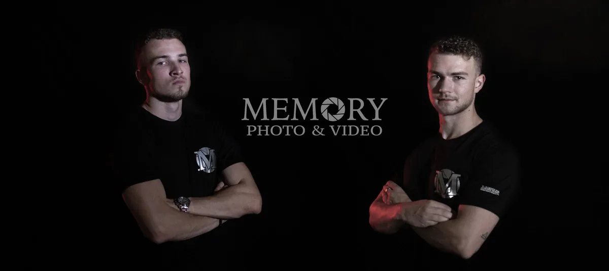

Сватбена фотография
Репортажни кадри, портрети на младоженците, семейни снимки и детайли — естествено, без излишна режисура.
Снимаме сватби в Хасково и околността — от сутрешната подготовка и церемонията до последния танц на празненството. Студиото ни е базирано в Кърджали, а екипът работи по сватби и събития в цяла България.

Репортажни кадри, портрети на младоженците, семейни снимки и детайли — естествено, без излишна режисура.
Филм, който пази клетвите, речите, музиката и емоцията на гостите, за да го изживеете отново след години.
Фото и видео екипът работи координирано и следва една обща история. Актуалните пакети и цени са на страницата „Услуги и цени“.
Част от сватбите, които сме заснели през годините. Още кадри ще намерите в пълното ни портфолио.


Memory Photo & Video е фото и видео студио от Кърджали, създадено през 2017 г. Приемаме сватби в Хасково и общината, а предварително уточняваме с вас програмата, местата и часовете — така остава време за подготовката, церемонията, фотосесията и вечерта.
Работим в цяла България и подхождаме спокойно към всяка организация, за да сте част от собствения си ден. Разгледайте портфолиото, вижте видеата, сравнете пакетите и проверете свободните дати.
Денят обикновено започва с подготовката, минава през церемонията и фотосесията и завършва с първия танц и тортата. Ако програмата ви е различна, ние я следваме, а не я променяме.
Лесопарк „Кенана“ е популярно място за разходки с алеи, зеленина и открити поляни — подходящ фон за естествени портрети. В центъра на града площад „Свобода“ и часовниковата кула дават градска атмосфера за кадри в деня на сватбата. Според сезона и програмата можем да планираме снимки и сред природата около Хасково. Летните вечери са особено подходящи за меки, златисти кадри. Разкажете ни каква атмосфера търсите и ще предложим маршрут.
За събития извън Кърджали транспортът е 0,51 € на километър в едната посока. При сватба на повече от 100 км от Кърджали е необходимо да бъде осигурено място за спане за екипа след сватбата. Точната сума за вашата дата можете да изчислите в калкулатора на страницата „Услуги и цени“.
Да. Приемаме сватби в Хасково и общината, както и в останалата част на България, според датата и организацията.
Транспортът е 0,51 € на километър в едната посока, като разстоянието се брои от Кърджали до мястото на сватбата. Калкулаторът на страницата „Услуги и цени“ показва сумата.
Проверете календара на страницата „Свободни дати“ и ни изпратете запитване с мястото и часа на церемонията, за да потвърдим датата и да подготвим оферта.